<title>On-On: The Harrier Central Guide</title>
<link rel="preconnect" href="https://fonts.googleapis.com">
<link rel="preconnect" href="https://fonts.gstatic.com" crossorigin>
<link rel="stylesheet" href="https://fonts.googleapis.com/css2?family=Big+Shoulders+Display:wght@600;800;900&family=Source+Serif+4:ital,opsz,wght@0,8..60,400;0,8..60,600;1,8..60,400&family=IBM+Plex+Mono:wght@400;500&display=swap">
<style>
/* Layout concept: a print magazine set on cool paper. Each "page" is a full-width
   section with a wide outer margin; chapter openers put a race-bib numeral in the
   left gutter and the headline in the right; body copy flows in two columns. */
:root {
  --paper:  #FBFCFA;   /* page ground, faint green bias */
  --ink:    #14201A;   /* text, deep green-black */
  --muted:  #5E6B63;   /* captions, standfirsts */
  --rule:   #DCE3DE;   /* hairlines */
  --tint:   #EEF3EF;   /* sidebars, how-to boxes */
  --jungle: #1F5A3A;   /* brand green: numerals, links */
  --chalk:  #C62828;   /* trail-mark red: used sparingly */
  --font-display: "Big Shoulders Display", "Arial Narrow", "Helvetica Neue", Arial, sans-serif;
  --font-body: "Source Serif 4", Georgia, "Times New Roman", serif;
  --font-mono: "IBM Plex Mono", ui-monospace, "SF Mono", Menlo, monospace;
  --measure: 34rem;
  --gutter: clamp(16px, 5vw, 72px);
  --space-page: clamp(72px, 12vw, 168px);
}
@media (prefers-color-scheme: dark) {
  :root:not([data-theme="light"]) {
    --paper: #0F1512; --ink: #E8EEEA; --muted: #9AA8A0; --rule: #26332C;
    --tint: #16201B; --jungle: #7CC99A; --chalk: #FF6B5E; color-scheme: dark;
  }
}
:root[data-theme="dark"] {
  --paper: #0F1512; --ink: #E8EEEA; --muted: #9AA8A0; --rule: #26332C;
  --tint: #16201B; --jungle: #7CC99A; --chalk: #FF6B5E; color-scheme: dark;
}

* { box-sizing: border-box; }
body {
  background: var(--paper); color: var(--ink);
  font-family: var(--font-body); font-size: 1.0625rem; line-height: 1.65;
  -webkit-font-smoothing: antialiased; text-rendering: optimizeLegibility;
}
a { color: var(--jungle); text-underline-offset: 3px; }
a:focus-visible { outline: 2px solid var(--chalk); outline-offset: 3px; border-radius: 2px; }
h1, h2, h3 { text-wrap: balance; margin: 0; }
p { margin: 0 0 1em; }

.wrap { max-width: 1180px; margin: 0 auto; padding-inline: var(--gutter); }
.page { padding-block: var(--space-page); border-top: 1px solid var(--rule); }
.page:first-of-type { border-top: 0; }

/* ---------- small type ---------- */
.kicker, .folio, .chip, .caption, .toc-num, .meta {
  font-family: var(--font-mono); font-size: 0.75rem; letter-spacing: 0.08em; text-transform: uppercase;
}
.kicker { color: var(--chalk); margin-bottom: 1.25rem; display: block; }
.caption { color: var(--muted); text-transform: none; letter-spacing: 0.02em; line-height: 1.5; }
.folio {
  display: flex; justify-content: space-between; gap: 1rem; flex-wrap: wrap;
  color: var(--muted); margin-top: clamp(56px, 8vw, 104px); padding-top: 1rem; border-top: 1px solid var(--rule);
}

/* ---------- cover ---------- */
.cover { padding-block: clamp(40px, 7vw, 96px) var(--space-page); }
.cover-top { display: flex; justify-content: space-between; gap: 1rem; flex-wrap: wrap; color: var(--muted); }
.masthead {
  font-family: var(--font-display); font-weight: 900; text-transform: uppercase;
  font-size: clamp(5.5rem, 22vw, 15rem); line-height: 0.82; letter-spacing: -0.01em;
  margin: clamp(32px, 6vw, 72px) 0 0; color: var(--ink);
}
.masthead span { color: var(--jungle); }
.cover-sub {
  font-family: var(--font-display); font-weight: 600; text-transform: uppercase; letter-spacing: 0.04em;
  font-size: clamp(1.25rem, 3vw, 2rem); margin-top: 1rem;
}
.cover-art { margin: clamp(40px, 6vw, 80px) 0; color: var(--ink); }
.cover-art svg { width: 100%; height: auto; display: block; max-width: 100%; }
.cover-lines {
  display: grid; grid-template-columns: repeat(auto-fit, minmax(15rem, 1fr)); gap: 2rem 3rem;
  list-style: none; padding: 0; margin: 0;
}
.cover-lines li { border-top: 2px solid var(--ink); padding-top: 0.875rem; }
.cover-lines b {
  display: block; font-family: var(--font-display); font-weight: 800; text-transform: uppercase;
  font-size: 1.5rem; line-height: 1.05; letter-spacing: 0.01em; margin-bottom: 0.375rem;
}
.cover-lines span { color: var(--muted); font-size: 0.95rem; line-height: 1.5; display: block; }

/* ---------- contents ---------- */
.toc-head { display: grid; grid-template-columns: minmax(0, 1fr); gap: 1rem; margin-bottom: clamp(40px, 6vw, 72px); }
.section-title {
  font-family: var(--font-display); font-weight: 800; text-transform: uppercase;
  font-size: clamp(2.75rem, 7vw, 5rem); line-height: 0.92; letter-spacing: 0.005em;
}
.toc { list-style: none; margin: 0; padding: 0; display: grid; grid-template-columns: repeat(auto-fit, minmax(min(100%, 22rem), 1fr)); column-gap: 4rem; }
.toc li { border-top: 1px solid var(--rule); }
.toc a {
  display: grid; grid-template-columns: 3.25rem minmax(0, 1fr) auto; gap: 1rem; align-items: baseline;
  padding: 1rem 0; text-decoration: none; color: var(--ink);
}
.toc a:hover .toc-title { color: var(--jungle); }
.toc-num { color: var(--chalk); }
.toc-title { font-family: var(--font-display); font-weight: 800; font-size: 1.5rem; text-transform: uppercase; line-height: 1; }
.toc-desc { grid-column: 2 / 3; color: var(--muted); font-size: 0.95rem; line-height: 1.45; }
.toc-page { font-family: var(--font-mono); font-size: 0.8rem; color: var(--muted); font-variant-numeric: tabular-nums; }

/* ---------- feature (history) ---------- */
.feature-head { max-width: 52rem; }
.feature-title {
  font-family: var(--font-display); font-weight: 900; text-transform: uppercase;
  font-size: clamp(3rem, 9vw, 7rem); line-height: 0.88; letter-spacing: -0.005em;
}
.standfirst {
  font-size: clamp(1.2rem, 2.2vw, 1.5rem); line-height: 1.45; color: var(--muted);
  max-width: 40rem; margin-top: 1.5rem;
}
.byline { margin-top: 1.25rem; color: var(--muted); }

.columns { columns: 2 22rem; column-gap: clamp(2.5rem, 5vw, 4.5rem); margin-top: clamp(40px, 6vw, 72px); }
.columns > * { break-inside: avoid-column; }
.columns p:first-of-type::first-letter {
  font-family: var(--font-display); font-weight: 900; float: left;
  font-size: 4.6em; line-height: 0.8; padding: 0.06em 0.1em 0 0; color: var(--jungle);
}
.columns h3 {
  font-family: var(--font-display); font-weight: 800; text-transform: uppercase; letter-spacing: 0.02em;
  font-size: 1.35rem; margin: 1.5rem 0 0.5rem;
}

.timeline { list-style: none; padding: 0; margin: clamp(48px, 7vw, 88px) 0 0; display: grid; grid-template-columns: repeat(auto-fit, minmax(min(100%, 12rem), 1fr)); gap: 2.5rem 2rem; }
.timeline li { border-top: 1px solid var(--ink); padding-top: 0.75rem; }
.timeline .yr { font-family: var(--font-display); font-weight: 900; font-size: 2.75rem; line-height: 1; color: var(--jungle); font-variant-numeric: tabular-nums; }
.timeline p { font-size: 0.95rem; line-height: 1.5; color: var(--ink); margin: 0.5rem 0 0; }

.pull {
  margin: clamp(48px, 7vw, 96px) auto; max-width: 46rem; text-align: center;
  font-family: var(--font-body); font-style: italic; font-size: clamp(1.5rem, 3.2vw, 2.25rem); line-height: 1.3;
}
.pull cite { display: block; margin-top: 1rem; font-style: normal; color: var(--muted); }

.charter { background: var(--tint); padding: clamp(28px, 4vw, 48px); margin-top: clamp(40px, 6vw, 72px); }
.charter ol { margin: 1rem 0 0; padding-left: 1.4rem; display: grid; gap: 0.5rem; }
.charter h3 { font-family: var(--font-display); font-weight: 800; text-transform: uppercase; font-size: 1.5rem; }

/* ---------- glossary ---------- */
.gloss { display: grid; grid-template-columns: repeat(auto-fit, minmax(min(100%, 16rem), 1fr)); gap: 2rem 3.5rem; margin-top: clamp(40px, 6vw, 72px); }
.gloss dt { font-family: var(--font-display); font-weight: 800; text-transform: uppercase; font-size: 1.35rem; line-height: 1.05; }
.gloss dd { margin: 0.35rem 0 0; color: var(--muted); font-size: 0.97rem; line-height: 1.5; }
.gloss div { border-top: 1px solid var(--rule); padding-top: 0.875rem; }

.marks { display: grid; grid-template-columns: repeat(auto-fit, minmax(min(100%, 12rem), 1fr)); gap: 2rem; margin-top: clamp(48px, 7vw, 88px); }
.mark { display: grid; gap: 0.75rem; }
.mark svg { width: 64px; height: 64px; color: var(--chalk); }
.mark b { font-family: var(--font-display); font-weight: 800; text-transform: uppercase; font-size: 1.15rem; }
.mark span { color: var(--muted); font-size: 0.95rem; line-height: 1.45; }

/* ---------- chapters ---------- */
.opener { display: grid; grid-template-columns: minmax(0, 1fr); gap: 1rem 3rem; align-items: start; }
@media (min-width: 900px) { .opener { grid-template-columns: 15rem minmax(0, 1fr); } }
.numeral {
  font-family: var(--font-display); font-weight: 900; color: var(--jungle);
  font-size: clamp(6rem, 16vw, 12rem); line-height: 0.78; font-variant-numeric: tabular-nums; letter-spacing: -0.02em;
}
.chapter-title {
  font-family: var(--font-display); font-weight: 900; text-transform: uppercase;
  font-size: clamp(2.6rem, 6.5vw, 5rem); line-height: 0.9;
}
.chips { display: flex; flex-wrap: wrap; gap: 0.5rem; margin-top: 1.5rem; }
.chip { border: 1px solid var(--rule); border-radius: 999px; padding: 0.3rem 0.7rem; color: var(--ink); letter-spacing: 0.06em; }
.chip.where { border-color: transparent; background: var(--tint); }
.chip-label { font-family: var(--font-mono); font-size: 0.75rem; letter-spacing: 0.08em; text-transform: uppercase; color: var(--muted); align-self: center; margin-right: 0.25rem; }

.howto { background: var(--tint); padding: 1.75rem 1.75rem 1.5rem; margin: 0 0 1.5em; }
.howto h4 { margin: 0 0 0.75rem; font-family: var(--font-mono); font-weight: 500; font-size: 0.75rem; letter-spacing: 0.1em; text-transform: uppercase; color: var(--chalk); }
.howto ol, .howto ul { margin: 0; padding-left: 1.25rem; display: grid; gap: 0.5rem; font-size: 0.98rem; line-height: 1.5; }
.tip { border-left: 2px solid var(--chalk); padding: 0.25rem 0 0.25rem 1.25rem; margin: 0 0 1.5em; font-style: italic; color: var(--muted); }

.back { display: grid; grid-template-columns: repeat(auto-fit, minmax(min(100%, 16rem), 1fr)); gap: 2.5rem 3.5rem; margin-top: clamp(40px, 6vw, 72px); }
.back h3 { font-family: var(--font-display); font-weight: 800; text-transform: uppercase; font-size: 1.5rem; margin-bottom: 0.5rem; }
.back p, .back li { color: var(--muted); font-size: 0.98rem; line-height: 1.5; }
.back ul { padding-left: 1.1rem; margin: 0; display: grid; gap: 0.35rem; }
.colophon { margin-top: clamp(56px, 8vw, 104px); color: var(--muted); font-size: 0.9rem; max-width: var(--measure); }


/* ---------- screenshots ---------- */
/* Phone screens sit in one row at the same height, each whole at its own
   shape; the row scrolls sideways when it is wider than the screen. */
.shots {
  display: flex; gap: clamp(20px, 3vw, 40px); justify-content: safe center;
  overflow-x: auto; margin-top: clamp(48px, 7vw, 88px); padding: 4px 4px 12px;
  scroll-snap-type: x proximity; -webkit-overflow-scrolling: touch;
}
.shot { display: table; width: 1px; margin: 0; flex: 0 0 auto; scroll-snap-align: start; }
.shot img {
  display: block; height: clamp(380px, 44vw, 560px); width: auto; max-width: none;
  border-radius: 28px; border: 1px solid var(--rule); background: var(--tint);
}
.shot figcaption, .wide figcaption { display: table-caption; caption-side: bottom; padding-top: 0.875rem; }
.wide { margin: clamp(48px, 7vw, 88px) 0 0; }
.wide img { display: block; width: 100%; height: auto; border-radius: 10px; border: 1px solid var(--rule); background: var(--tint); }
.wide figcaption { display: block; }
.shot b, .wide b { display: block; font-family: var(--font-mono); font-weight: 500; font-size: 0.72rem; letter-spacing: 0.1em; text-transform: uppercase; color: var(--ink); margin-bottom: 0.2rem; }
.shot span, .wide span { font-family: var(--font-body); font-size: 0.9rem; line-height: 1.45; color: var(--muted); }

@media (max-width: 600px) {
  body { font-size: 1rem; }
  .columns p:first-of-type::first-letter { font-size: 3.8em; }
  .howto { padding: 1.25rem; }
}
@media (prefers-reduced-motion: no-preference) {
  .toc a .toc-title { transition: color 0.15s ease; }
}
</style>

<!-- ============================== COVER ============================== -->
<header class="page cover">
  <div class="wrap">
    <div class="cover-top meta"><span>Harrier Central · User Guide</span><span>Issue 3.1 · Autumn 2026</span></div>
    <h1 class="masthead">On<span>-</span>On</h1>
    <p class="cover-sub">The magazine for hashers who carry a phone on trail</p>

    <figure class="cover-art" aria-hidden="true">
      <svg viewBox="0 0 1200 220" fill="none" stroke="currentColor" stroke-width="3" stroke-linecap="round" stroke-linejoin="round">
        <path d="M10 170 C 140 170, 180 60, 320 70 S 520 190, 640 150 S 820 30, 960 60 S 1120 160, 1190 120" stroke-dasharray="2 14"/>
        <circle cx="320" cy="70" r="26" stroke="var(--chalk)" stroke-width="4"/>
        <g stroke="var(--chalk)" stroke-width="4"><path d="M470 150 l44 -18"/><path d="M500 118 l14 14 -18 12"/></g>
        <circle cx="640" cy="150" r="26" stroke="var(--chalk)" stroke-width="4"/>
        <g stroke="var(--chalk)" stroke-width="4"><path d="M800 52 l38 -10"/><path d="M826 30 l12 12 -14 14"/></g>
        <g stroke="var(--chalk)" stroke-width="4"><path d="M1040 98 v34"/><path d="M1056 98 v34"/><path d="M1072 98 v34"/></g>
        <circle cx="1190" cy="120" r="7" fill="var(--ink)" stroke="none"/>
      </svg>
      <figcaption class="caption">A trail as the pack meets it: arrows, two checks, and three bars where the hare laid a false trail.</figcaption>
    </figure>

    <ul class="cover-lines">
      <li><b>From the Hash House</b><span>How a Monday run in 1938 Kuala Lumpur became a worldwide habit.</span></li>
      <li><b>PackTrack</b><span>Find the pack when you are lost, then replay the whole run at the On Inn.</span></li>
      <li><b>Hash Cash</b><span>Run fees, memberships, kit and credit, in one ledger that works in a field.</span></li>
      <li><b>Your kennel on the web</b><span>hashruns.org, the run email, and the WhatsApp notice that writes itself.</span></li>
    </ul>
  </div>
</header>

<!-- ============================== CONTENTS ============================== -->
<section class="page" id="contents" aria-labelledby="contents-title">
  <div class="wrap">
    <div class="toc-head">
      <span class="kicker">In this issue</span>
      <h2 class="section-title" id="contents-title">Contents</h2>
    </div>
    <ol class="toc">
      <li><a href="#history"><span class="toc-num">Feature</span><span class="toc-title">From the Hash House</span><span class="toc-page">03</span><span class="toc-desc">A short history of hashing, and of this app.</span></a></li>
      <li><a href="#glossary"><span class="toc-num">Ref</span><span class="toc-title">Speaking Hash</span><span class="toc-page">07</span><span class="toc-desc">The words you will hear in the circle, and the marks you will find on trail.</span></a></li>
      <li><a href="#ch1"><span class="toc-num">01</span><span class="toc-title">Getting started</span><span class="toc-page">09</span><span class="toc-desc">Your account, your invite code, and guest mode.</span></a></li>
      <li><a href="#ch2"><span class="toc-num">02</span><span class="toc-title">Kennels &amp; membership</span><span class="toc-page">11</span><span class="toc-desc">Following, joining, and who does what in the club.</span></a></li>
      <li><a href="#ch3"><span class="toc-num">03</span><span class="toc-title">Runs &amp; the calendar</span><span class="toc-page">13</span><span class="toc-desc">Finding a trail, and setting one.</span></a></li>
      <li><a href="#ch4"><span class="toc-num">04</span><span class="toc-title">RSVP &amp; check-in</span><span class="toc-page">15</span><span class="toc-desc">Saying you are coming, and proving you came.</span></a></li>
      <li><a href="#ch5"><span class="toc-num">05</span><span class="toc-title">PackTrack</span><span class="toc-page">17</span><span class="toc-desc">Live tracking, the map, replay and Trail TV.</span></a></li>
      <li><a href="#ch6"><span class="toc-num">06</span><span class="toc-title">Photos &amp; Hash Flash</span><span class="toc-page">19</span><span class="toc-desc">Taking, sorting and sharing the evidence.</span></a></li>
      <li><a href="#ch7"><span class="toc-num">07</span><span class="toc-title">The circle</span><span class="toc-page">21</span><span class="toc-desc">Down-downs, songs and the hash trash.</span></a></li>
      <li><a href="#ch8"><span class="toc-num">08</span><span class="toc-title">Hash Cash</span><span class="toc-page">23</span><span class="toc-desc">Fees, memberships, kit, credit and receipts.</span></a></li>
      <li><a href="#ch9"><span class="toc-num">09</span><span class="toc-title">Chat, alerts &amp; email</span><span class="toc-page">25</span><span class="toc-desc">Keeping the pack talking, on and off the app.</span></a></li>
      <li><a href="#ch10"><span class="toc-num">10</span><span class="toc-title">Stats &amp; leaderboards</span><span class="toc-page">27</span><span class="toc-desc">Run counts and who is leading the pack.</span></a></li>
      <li><a href="#ch11"><span class="toc-num">11</span><span class="toc-title">Your kennel on the web</span><span class="toc-page">29</span><span class="toc-desc">hashruns.org and the page builder.</span></a></li>
      <li><a href="#ch12"><span class="toc-num">12</span><span class="toc-title">The admin portal</span><span class="toc-page">31</span><span class="toc-desc">Running the club from a desk.</span></a></li>
      <li><a href="#back"><span class="toc-num">End</span><span class="toc-title">Quick reference</span><span class="toc-page">33</span><span class="toc-desc">Where to get help, and the guide's fine print.</span></a></li>
    </ol>
    <div class="folio"><span>On-On · Autumn 2026</span><span>02</span></div>
  </div>
</section>

<!-- ============================== HISTORY ============================== -->
<article class="page" id="history" aria-labelledby="history-title">
  <div class="wrap">
    <div class="feature-head">
      <span class="kicker">Feature · History</span>
      <h2 class="feature-title" id="history-title">From the Hash House</h2>
      <p class="standfirst">A handful of expatriates in pre-war Kuala Lumpur needed a cure for the weekend. Nearly ninety years later, the cure has kennels on every continent and a song for every occasion.</p>
      <p class="byline meta">Words by the Harrier Central team</p>
    </div>

    <div class="columns">
      <p>Hashing grew out of an old English schoolboy game, hare and hounds, sometimes called the paper chase. One runner sets off with a bag of shredded paper and lays a trail; the rest follow a few minutes later and try to catch them. In December 1938 a group of British colonial officers and businessmen in Kuala Lumpur, then the capital of the Federated Malay States, started running it on Monday evenings.</p>
      <p>Their base was the Selangor Club Chambers, a residential annexe whose dining room served food so unvarying that its residents called it the Hash House. The runners took the name with them. The Hash House Harriers were led by A.&nbsp;S. Gispert, known as G, with Cecil Lee, Frederick &ldquo;Horse&rdquo; Thomson and Ronald &ldquo;Torch&rdquo; Bennett among the early pack.</p>
      <h3>War, and a second start</h3>
      <p>The Second World War stopped the runs. Gispert was killed in early 1942 during the fighting for Singapore. In 1946 the survivors started again in Kuala Lumpur, and in 1950 the club was registered as a society with a short list of objectives that hashers still quote. Kuala Lumpur's kennel is known to this day as the Mother Hash.</p>
      <h3>From one kennel to thousands</h3>
      <p>For twenty years there was one hash. Then Singapore started its own in 1962, and kennels followed across Southeast Asia, Australia and beyond, usually carried by somebody who had been posted abroad and missed it. The first InterHash, a worldwide gathering, was held in Hong Kong in 1978. Today there are kennels on every continent, from monthly full-moon runs to clubs that meet several times a week.</p>
      <h3>What has not changed</h3>
      <p>The essentials are the same as they were in 1938. A hare lays a trail with marks only the pack can read. The trail splits at checks and doubles back on false trails, so the fast runners have to search while the slower ones catch up. Everyone finishes together at the On Inn, where the circle hands out down-downs and new hashers earn their names.</p>
      <h3>Where Harrier Central fits</h3>
      <p>Harrier Central began as a phone app for one hash, written by a hasher in his spare time when the Flutter toolkit was still at version 0.8. It has grown into a platform with an app for iOS and Android, an admin portal, and a website for every kennel at hashruns.org. Its job is to do the paperwork so the Grand Master, the Hash Cash and the Religious Advisor can get on with the trail and the circle.</p>
    </div>

    <ol class="timeline" aria-label="Milestones">
      <li><div class="yr">1938</div><p>First run of the Hash House Harriers, Kuala Lumpur.</p></li>
      <li><div class="yr">1942</div><p>Runs stop for the war; founder A.&nbsp;S. Gispert is killed.</p></li>
      <li><div class="yr">1946</div><p>The Mother Hash starts again in Kuala Lumpur.</p></li>
      <li><div class="yr">1962</div><p>Singapore becomes the second kennel. The spread begins.</p></li>
      <li><div class="yr">1978</div><p>The first InterHash, in Hong Kong.</p></li>
    </ol>

    <div class="charter">
      <span class="kicker">From the 1950 registration</span>
      <h3>The objectives of the Hash</h3>
      <ol>
        <li>To promote physical fitness among our members.</li>
        <li>To get rid of weekend hangovers.</li>
        <li>To acquire a good thirst and to satisfy it in beer.</li>
        <li>To persuade the older members that they are not as old as they feel.</li>
      </ol>
    </div>

    <blockquote class="pull">&ldquo;A drinking club with a running problem.&rdquo;<cite class="meta">The hash, describing itself, everywhere</cite></blockquote>
    <div class="folio"><span>Feature · From the Hash House</span><span>03</span></div>
  </div>
</article>

<!-- ============================== GLOSSARY ============================== -->
<section class="page" id="glossary" aria-labelledby="glossary-title">
  <div class="wrap">
    <span class="kicker">Reference</span>
    <h2 class="section-title" id="glossary-title">Speaking Hash</h2>
    <p class="standfirst">The app uses the words your kennel uses. If you are new, these are the ones you will meet first.</p>

    <dl class="gloss">
      <div><dt>Kennel</dt><dd>A hash club. Most hashers follow several and belong to one or two.</dd></div>
      <div><dt>Hare</dt><dd>The runner who sets the trail. Often there are two or three.</dd></div>
      <div><dt>Pack</dt><dd>Everyone chasing the hare's trail.</dd></div>
      <div><dt>On-On</dt><dd>The call that you are on the true trail. Also the name of the party after the run.</dd></div>
      <div><dt>Check</dt><dd>A mark where the trail could go several ways. The pack spreads out until someone finds the true trail.</dd></div>
      <div><dt>On Inn</dt><dd>The finish, usually a pub. PackTrack ends each trail here.</dd></div>
      <div><dt>Circle</dt><dd>The gathering at the end, led by the Religious Advisor, where down-downs are given.</dd></div>
      <div><dt>Down-down</dt><dd>A drink downed in the circle for a reason, real or invented.</dd></div>
      <div><dt>Virgin</dt><dd>Someone at their first ever hash. Visitors are from other kennels.</dd></div>
      <div><dt>Hash name</dt><dd>The name the circle gives you, usually after a few runs and never the one you would have chosen.</dd></div>
      <div><dt>Mismanagement</dt><dd>The committee: Grand Master, Religious Advisor, Hash Cash, Hare Raiser, Hash Flash and the rest.</dd></div>
      <div><dt>Hash trash</dt><dd>The written account of a run, usually more entertaining than accurate.</dd></div>
    </dl>

    <div class="marks" aria-label="Common trail marks">
      <div class="mark">
        <svg viewBox="0 0 64 64" fill="none" stroke="currentColor" stroke-width="4" stroke-linecap="round" stroke-linejoin="round" aria-hidden="true"><path d="M10 40 L48 24"/><path d="M38 14 L50 23 L41 36"/></svg>
        <b>Arrow</b><span>On-on. You are on the trail; keep going this way.</span>
      </div>
      <div class="mark">
        <svg viewBox="0 0 64 64" fill="none" stroke="currentColor" stroke-width="4" aria-hidden="true"><circle cx="32" cy="32" r="20"/></svg>
        <b>Circle</b><span>A check. The trail continues somewhere from here; search for it.</span>
      </div>
      <div class="mark">
        <svg viewBox="0 0 64 64" fill="none" stroke="currentColor" stroke-width="4" stroke-linecap="round" aria-hidden="true"><path d="M20 14 V50"/><path d="M32 14 V50"/><path d="M44 14 V50"/></svg>
        <b>Three bars</b><span>False trail. Go back to the last check and try another way.</span>
      </div>
      <div class="mark">
        <svg viewBox="0 0 64 64" fill="none" stroke="currentColor" stroke-width="4" stroke-linecap="round" aria-hidden="true"><path d="M16 16 L48 48"/><path d="M48 16 L16 48"/></svg>
        <b>Cross</b><span>Not this way. Marks vary from kennel to kennel; your hares will brief you.</span>
      </div>
    </div>
    <div class="folio"><span>Reference · Speaking Hash</span><span>07</span></div>
  </div>
</section>

<!-- ============================== CH 1 ============================== -->
<section class="page" id="ch1" aria-labelledby="ch1-title">
  <div class="wrap">
    <div class="opener">
      <div class="numeral" aria-hidden="true">01</div>
      <div>
        <span class="kicker">Chapter 01 · Identity &amp; access</span>
        <h2 class="chapter-title" id="ch1-title">Getting started</h2>
        <p class="standfirst">No passwords to forget. Your phone is your key, and a six-letter invite code is your spare.</p>
        <div class="chips"><span class="chip-label">For</span><span class="chip">Every hasher</span><span class="chip-label">In</span><span class="chip where">App</span><span class="chip where">Web</span></div>
      </div>
    </div>
    <div class="columns">
      <p>Harrier Central signs your device in, not a username. When you register, your phone receives its own secret and uses it to prove who you are on every request. There is nothing to type at the trail head and nothing for anyone to guess.</p>
      <p>You may already have an account without knowing it. Kennel admins often register members at their first run so their run count starts on day one. If that happened to you, use your invite code rather than creating a second account, so your history stays in one place.</p>
      <div class="howto">
        <h4>How to sign in on a new phone</h4>
        <ol>
          <li>Install Harrier Central from the App Store or Google Play.</li>
          <li>Choose <b>I have an invite code</b>.</li>
          <li>Enter the six letters and tap <b>Get Started!</b></li>
          <li>Your kennels, runs and history load from the server.</li>
        </ol>
      </div>
      <p>Lost the code? Choose <b>Find my account</b>, enter your hash name or email address, and the app emails your invite code to the address on file. If the address is out of date, your kennel's admin can correct it.</p>
      <p>Just looking? Guest mode lets you browse kennels and upcoming runs without an account. When you are ready to RSVP or check in, the app asks you to sign up.</p>
      <p class="tip">Your profile holds your hash name, photo and home location. The home location is what &ldquo;runs near me&rdquo; measures from.</p>
      <p>If you leave the platform, deleting your account removes your personal details and keeps the anonymous run records your kennel's history depends on.</p>
    </div>
    <div class="shots"><figure class="shot">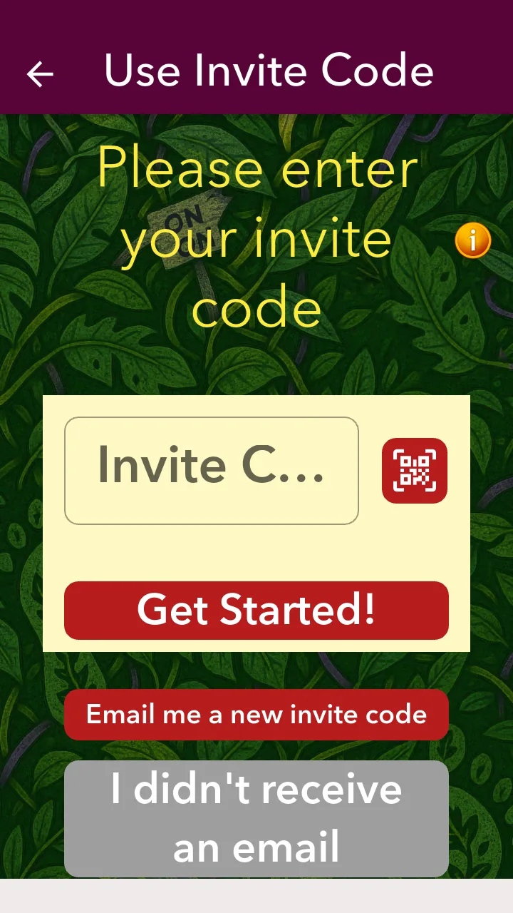<figcaption><b>Use Invite Code</b><span>Six letters and Get Started! If you never had the email, ask for a new code here.</span></figcaption></figure></div>
    <div class="folio"><span>01 · Getting started</span><span>09</span></div>
  </div>
</section>

<!-- ============================== CH 2 ============================== -->
<section class="page" id="ch2" aria-labelledby="ch2-title">
  <div class="wrap">
    <div class="opener">
      <div class="numeral" aria-hidden="true">02</div>
      <div>
        <span class="kicker">Chapter 02 · Kennels, membership &amp; permissions</span>
        <h2 class="chapter-title" id="ch2-title">Kennels &amp; membership</h2>
        <p class="standfirst">Follow any kennel to see its runs. Join one to make your runs count. The roster shows who does what.</p>
        <div class="chips"><span class="chip-label">For</span><span class="chip">Hasher</span><span class="chip">Kennel admin</span><span class="chip">Hash Cash</span><span class="chip-label">In</span><span class="chip where">App</span><span class="chip where">Portal</span></div>
      </div>
    </div>
    <div class="columns">
      <p>Search for a kennel by name, city, region or country. Kennels can add their own search tags, so a search for &ldquo;Scotland&rdquo; finds the clubs that call themselves Scottish even where the map files them under a city.</p>
      <p>Following a kennel brings its whole run history to your phone, not just the last few days, and puts its upcoming runs in your list. Following is your choice and costs nothing. Membership is the club's decision: you are a member while your membership date is in the future, and your Hash Cash keeps that date current when you pay.</p>
      <div class="howto">
        <h4>Follow a kennel</h4>
        <ol>
          <li>Open the Kennels tab and search.</li>
          <li>Open the kennel's page.</li>
          <li>Tap <b>Follow</b>. Its runs appear in your list within a few seconds.</li>
        </ol>
      </div>
      <h3>Who does what</h3>
      <p>Every kennel has its Mismanagement: Grand Master, Religious Advisor, Hash Cash, Hare Raiser, Hash Flash and others. The kennel page lists them, so you know who to ask before you turn up without money.</p>
      <p>Running the software is a separate job. A kennel admin may hold no office at all, and an office holder needs no admin rights. Either can grant a function, and a kennel can switch functions on or off against the platform's defaults.</p>
      <p class="tip">A hare can edit their own run without becoming an admin of the club.</p>
      <p>Kennel admins see the roster with each member's run count, standing and contact details: cards on a phone, a dense grid on a desktop. They can add a hasher who is not on the platform yet, or import a whole roster when a club moves over.</p>
    </div>
    <div class="shots"><figure class="shot">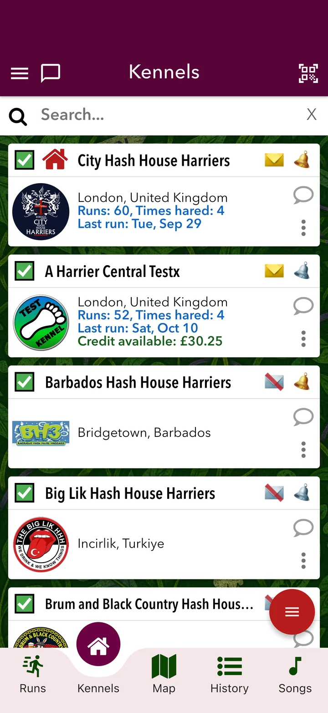<figcaption><b>Kennels</b><span>Every kennel you follow, with your runs there and any credit you hold.</span></figcaption></figure><figure class="shot">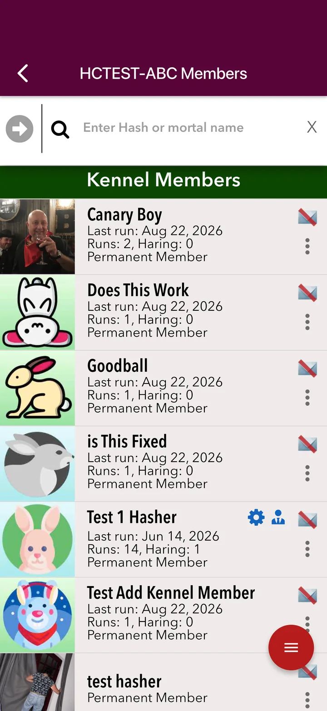<figcaption><b>Members</b><span>The roster: last run, run count and standing for each member.</span></figcaption></figure></div>
    <div class="folio"><span>02 · Kennels &amp; membership</span><span>11</span></div>
  </div>
</section>

<!-- ============================== CH 3 ============================== -->
<section class="page" id="ch3" aria-labelledby="ch3-title">
  <div class="wrap">
    <div class="opener">
      <div class="numeral" aria-hidden="true">03</div>
      <div>
        <span class="kicker">Chapter 03 · Runs &amp; the calendar</span>
        <h2 class="chapter-title" id="ch3-title">Runs &amp; the calendar</h2>
        <p class="standfirst">Every run from every kennel you follow, in one list. And for hare raisers, a run sheet that fills itself in.</p>
        <div class="chips"><span class="chip-label">For</span><span class="chip">Hasher</span><span class="chip">Hare</span><span class="chip">Hare Raiser</span><span class="chip-label">In</span><span class="chip where">App</span><span class="chip where">Portal</span><span class="chip where">Web</span></div>
      </div>
    </div>
    <div class="columns">
      <p>The Runs tab lists upcoming trails across all your kennels. Filter by kennel, date range or distance from you. A run you attended today stays at the top until the evening is over, so the post-run admin is never more than a tap away.</p>
      <p>Past runs carry small icons for what they hold: a PackTrack trail with the number of runners who recorded it, photos, chat and down-downs. You can see at a glance which runs have something to look at, and the list looks the same with or without a signal.</p>
      <p>Open a run for the whole story on one screen: the start on a map, the hares, the fees, the on-after, and who is coming. One tap opens the start in your own maps app.</p>
      <div class="howto">
        <h4>Set a run (hare raisers and hares)</h4>
        <ol>
          <li>From the kennel, add a run, or open an existing one to edit.</li>
          <li>Set the date and time, then drop a pin or search the address. The time zone follows the location.</li>
          <li>Add the hares, the description, the fees and an image.</li>
          <li>Tap <b>Save</b>, or <b>Save and send</b> to post it to WhatsApp and email it in one go (chapter 09).</li>
        </ol>
      </div>
      <p>Run numbers stay continuous on their own. Insert a run from the club's archive and the later numbers move up; a club with an unusual history can still set a number by hand.</p>
      <p>Runs can flow into the club's Google Calendar. And a kennel that already lists its runs on its own website can give Harrier Central the address; the runs are read from that page several times a day and appear here without anyone typing them twice.</p>
    </div>
    <div class="shots"><figure class="shot">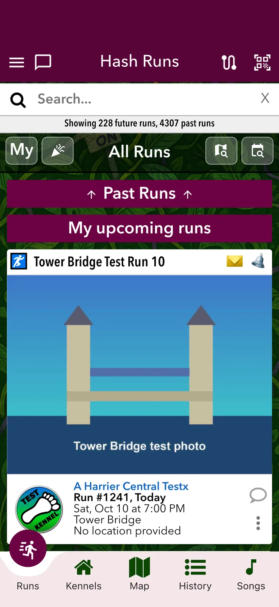<figcaption><b>Hash Runs</b><span>Your upcoming runs first, from every kennel you follow.</span></figcaption></figure><figure class="shot">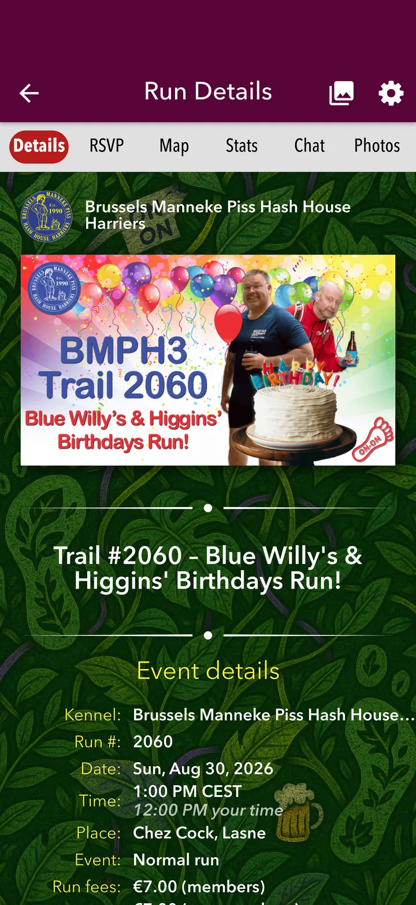<figcaption><b>Run details</b><span>Everything about one run, in tabs: details, RSVP, map, stats, chat, photos.</span></figcaption></figure><figure class="shot">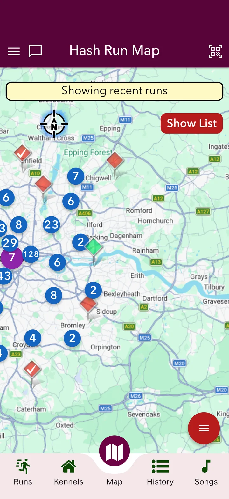<figcaption><b>Hash Run Map</b><span>Recent and upcoming runs as pins around you.</span></figcaption></figure></div>
    <div class="folio"><span>03 · Runs &amp; the calendar</span><span>13</span></div>
  </div>
</section>

<!-- ============================== CH 4 ============================== -->
<section class="page" id="ch4" aria-labelledby="ch4-title">
  <div class="wrap">
    <div class="opener">
      <div class="numeral" aria-hidden="true">04</div>
      <div>
        <span class="kicker">Chapter 04 · Attendance &amp; check-in</span>
        <h2 class="chapter-title" id="ch4-title">RSVP &amp; check-in</h2>
        <p class="standfirst">Tell the hares you are coming so they buy enough beer. Check in when you arrive, even in a field with no signal.</p>
        <div class="chips"><span class="chip-label">For</span><span class="chip">Hasher</span><span class="chip">Hash Cash</span><span class="chip-label">In</span><span class="chip where">App</span><span class="chip where">Web</span></div>
      </div>
    </div>
    <div class="columns">
      <p>RSVP with Yes, Maybe or No on any upcoming run. Going away for a weekend of hashing? Answer several runs in one go. Once a run has happened, the RSVP buttons go away; there is nothing left to decide.</p>
      <h3>At the start</h3>
      <p>Arrive at the start around the right time and the app offers to check you in. Self check-in saves a queue at the Hash Cash, and at a free run the button simply says <b>Check In</b>. Starting a PackTrack recording also checks you in, so your RSVP, attendance and trail always agree.</p>
      <div class="howto">
        <h4>Check in the pack (Hash Cash)</h4>
        <ul>
          <li>Search the list of members and recent visitors, or scan a hasher's QR code.</li>
          <li>Check in a visiting group in one action.</li>
          <li>Take the fee at the same time: cash, credit or card.</li>
          <li>No signal? Carry on. Everything syncs when you reconnect.</li>
        </ul>
      </div>
      <p>Virgins and visitors are marked as they check in, so the circle can welcome them properly later.</p>
      <p class="tip">Your check-in is what counts. A run you attended adds to your totals for that kennel the moment it syncs.</p>
    </div>
    <div class="shots"><figure class="shot">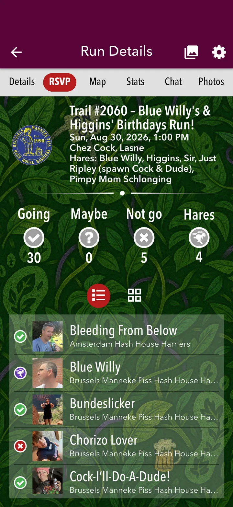<figcaption><b>RSVP</b><span>Going, maybe, not going and hares, with one tap to add the run to your calendar.</span></figcaption></figure></div>
    <div class="folio"><span>04 · RSVP &amp; check-in</span><span>15</span></div>
  </div>
</section>

<!-- ============================== CH 5 ============================== -->
<section class="page" id="ch5" aria-labelledby="ch5-title">
  <div class="wrap">
    <div class="opener">
      <div class="numeral" aria-hidden="true">05</div>
      <div>
        <span class="kicker">Chapter 05 · Live tracking</span>
        <h2 class="chapter-title" id="ch5-title">PackTrack</h2>
        <p class="standfirst">See where the pack is when you have lost it. Replay the whole run afterwards, photos and all.</p>
        <div class="chips"><span class="chip-label">For</span><span class="chip">Hasher</span><span class="chip">Hare</span><span class="chip">Kennel admin</span><span class="chip-label">In</span><span class="chip where">App</span><span class="chip where">Web</span></div>
      </div>
    </div>
    <div class="columns">
      <p>Start tracking from the run tools and put the phone in your pocket. PackTrack keeps recording with the screen off, stores points when you lose signal and sends them when you are back in range, and stops on its own once you have clearly finished, so it does not follow you home.</p>
      <p>Choose <b>Best</b>, <b>Balanced</b> or <b>Power Saver</b> before you set off. All three use precise GPS; they differ in how often your phone reports your position, which is what decides the battery cost on a long trail.</p>
      <div class="howto">
        <h4>Lost? Find the pack</h4>
        <ol>
          <li>Open the live map from the run tools.</li>
          <li>Switch to <b>Radar</b> for the bearing and distance to each runner.</li>
          <li>Or open the <b>List</b>, sorted by trail length or by who is nearest.</li>
        </ol>
      </div>
      <h3>Marks on the map</h3>
      <p>Hares can drop typed marks at their exact position: checks, drink stops, cautions with their own text, and the On Inn, which ends the drawn trail. A distress mark always shows, even if you have hidden that runner's trail.</p>
      <h3>Replay and share</h3>
      <p>After the run, scrub through the replay and watch the pack spread at each check. Photos pop up at the moment they were taken. Share the replay to anyone; it plays on the web without the app. Export your trail as GPX, or import one from your watch, Strava or Garmin.</p>
      <p class="tip">Trail TV puts the live and recent trails on the big screen at the on-after.</p>
      <p>Your recorded trail is cleaned for GPS noise rather than deleted, and time stood at a check is recognised as standing still, so jitter is not counted as distance.</p>
    </div>
    <div class="shots"><figure class="shot">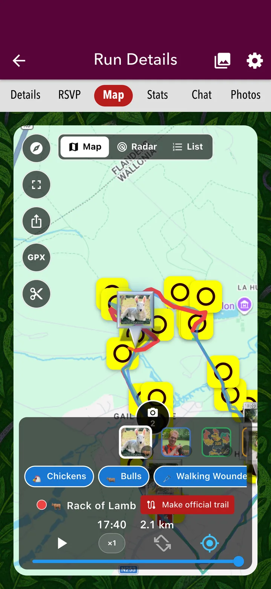<figcaption><b>Map · Radar · List</b><span>BMPH3 #2060 in the app: the hares' checks, photo pins, the pack's trails and the replay bar.</span></figcaption></figure></div><figure class="wide">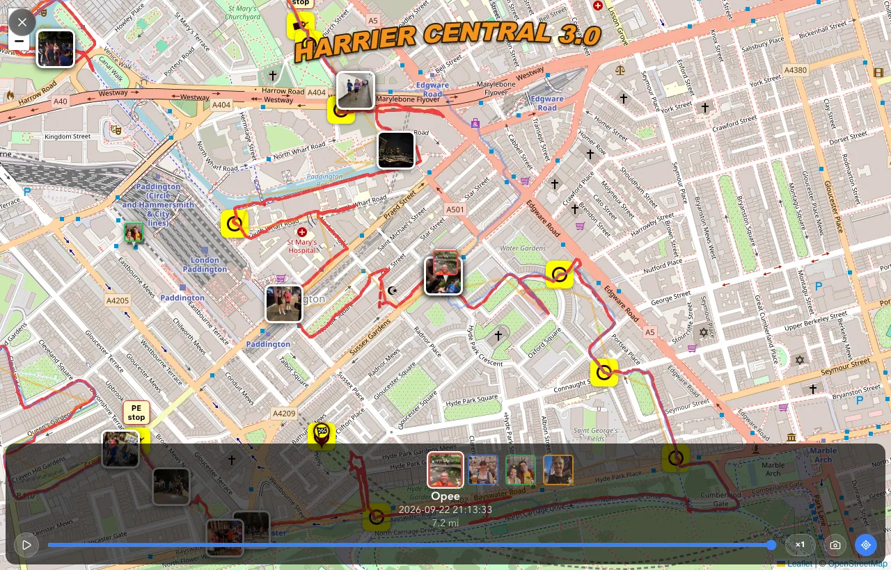<figcaption><b>PackTrack replay</b><span>City H3 #1940 on the web: the pack's trails, the checks the hares marked, drink stops and the photos taken on the way. The bar plays the run back.</span></figcaption></figure>
    <div class="folio"><span>05 · PackTrack</span><span>17</span></div>
  </div>
</section>

<!-- ============================== CH 6 ============================== -->
<section class="page" id="ch6" aria-labelledby="ch6-title">
  <div class="wrap">
    <div class="opener">
      <div class="numeral" aria-hidden="true">06</div>
      <div>
        <span class="kicker">Chapter 06 · Photos</span>
        <h2 class="chapter-title" id="ch6-title">Photos &amp; Hash Flash</h2>
        <p class="standfirst">Take the photo on trail and it files itself under the right run, pinned to the right spot.</p>
        <div class="chips"><span class="chip-label">For</span><span class="chip">Hasher</span><span class="chip">Hash Flash</span><span class="chip-label">In</span><span class="chip where">App</span><span class="chip where">Portal</span><span class="chip where">Web</span></div>
      </div>
    </div>
    <div class="columns">
      <p>Photos you take from the run tools attach themselves to the run and to the place you were standing. For each one you choose: private, or submitted to the club. A full-quality copy also goes to your camera roll, so the club's copy is never the only one.</p>
      <p>Already took them with the camera app? Import from your camera roll and Harrier Central works out which photos belong to this run, by time and place, and pins each where it was taken.</p>
      <div class="howto">
        <h4>Review submissions (Hash Flash)</h4>
        <ol>
          <li>Open the review queue for the run.</li>
          <li>Approve, reject or delete, one at a time or in bulk.</li>
          <li>Pick a cover photo to give the run card a face.</li>
          <li>Crop where needed. The original is kept, so a crop can be undone.</li>
        </ol>
      </div>
      <p>Approved photos appear as pins on the run map and in a carousel you can swipe through. Every photo is shown whole, at its own shape, so whoever was standing at the edge stays in the picture.</p>
      <p class="tip">The public gallery on the web never shows GPS coordinates. Where people were stays private.</p>
    </div>
    <div class="shots"><figure class="shot">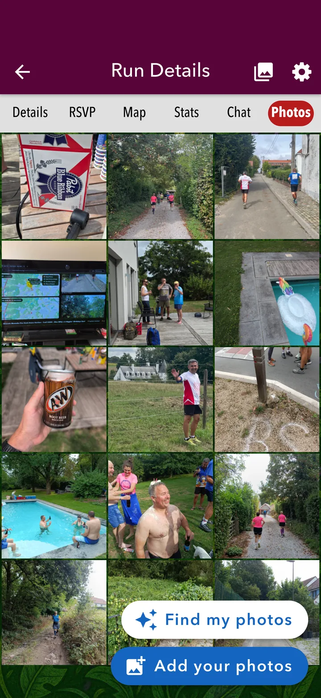<figcaption><b>Photos</b><span>Add your photos, or let Find my photos pick them out of your camera roll.</span></figcaption></figure><figure class="shot">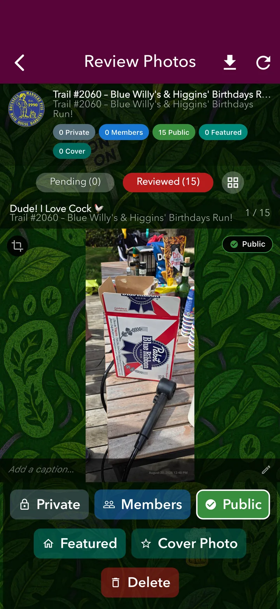<figcaption><b>Review Photos</b><span>Hash Flash sets each photo private, members-only or public, features it, or makes it the cover.</span></figcaption></figure></div><figure class="wide">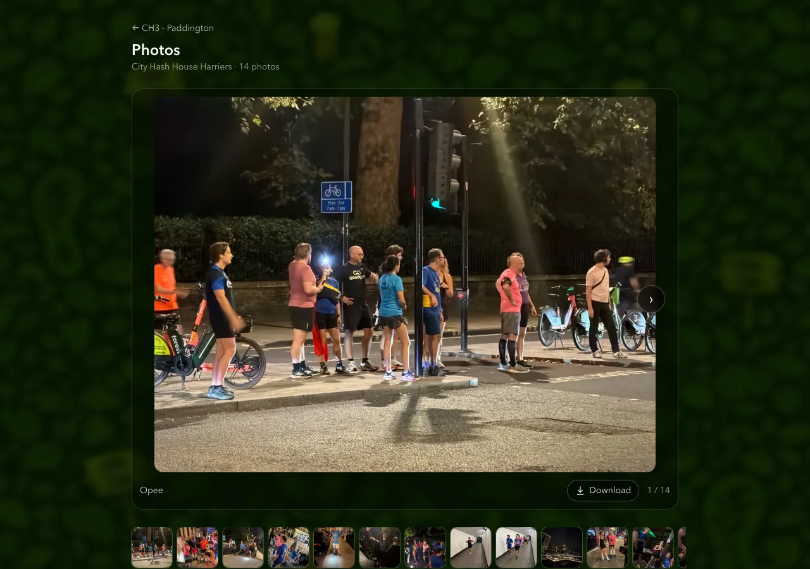<figcaption><b>The public gallery</b><span>The same run's approved photos on hashruns.org: one at a time, whole, with the rest in a strip below.</span></figcaption></figure>
    <div class="folio"><span>06 · Photos &amp; Hash Flash</span><span>19</span></div>
  </div>
</section>

<!-- ============================== CH 7 ============================== -->
<section class="page" id="ch7" aria-labelledby="ch7-title">
  <div class="wrap">
    <div class="opener">
      <div class="numeral" aria-hidden="true">07</div>
      <div>
        <span class="kicker">Chapter 07 · Circle, down-downs &amp; songs</span>
        <h2 class="chapter-title" id="ch7-title">The circle</h2>
        <p class="standfirst">Charges, songs and the record of what really happened, all in the Religious Advisor's pocket.</p>
        <div class="chips"><span class="chip-label">For</span><span class="chip">Religious Advisor</span><span class="chip">Hasher</span><span class="chip-label">In</span><span class="chip where">App</span><span class="chip where">Web</span></div>
      </div>
    </div>
    <div class="columns">
      <p>The Religious Advisor records each down-down against a hasher with its reason, and the list becomes the circle's running order. Mark one done, undo it, or cancel it; a noisy circle forgives mistakes. A live count of drinks poured keeps the beer meister informed.</p>
      <p>Any hasher can nominate somebody, checked in or not, so the circle is not only the RA's ideas.</p>
      <div class="howto">
        <h4>Lead a song</h4>
        <ol>
          <li>Open the kennel's songbook from the run.</li>
          <li>Select the song.</li>
          <li>Everyone at the run gets a notification and the words on screen.</li>
        </ol>
      </div>
      <p>Each kennel chooses the songs it actually sings from a shared library, so the songbook sounds like your club.</p>
      <h3>Hash trash</h3>
      <p>After the run, the hash trash records what happened. It sits on the run's page for those who were there to relive and those who were not to catch up on. Past down-downs show there too.</p>
    </div>
    <div class="shots"><figure class="shot">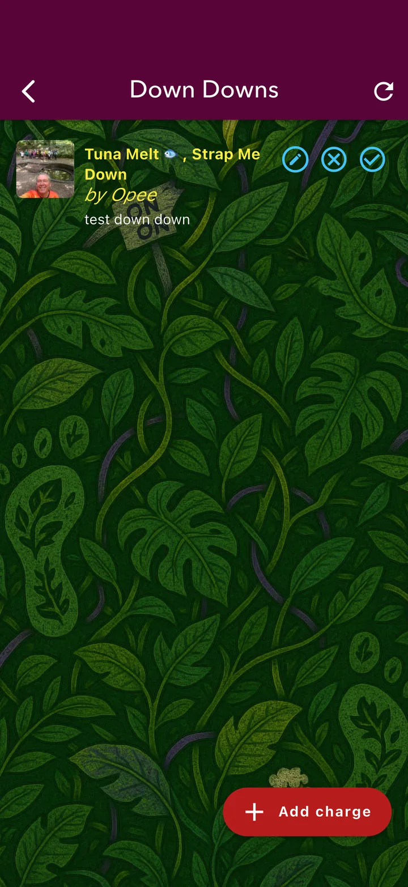<figcaption><b>Down Downs</b><span>Each charge with who called it and why; tick it off when it is drunk.</span></figcaption></figure><figure class="shot">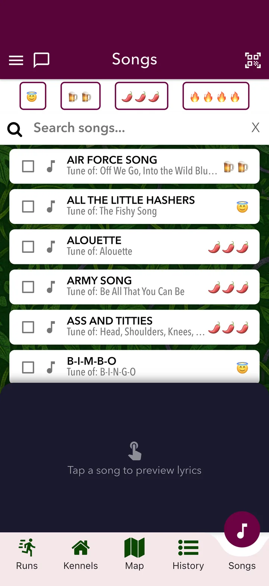<figcaption><b>Songs</b><span>The kennel songbook. Tap one to preview the words, or send it to the circle.</span></figcaption></figure><figure class="shot">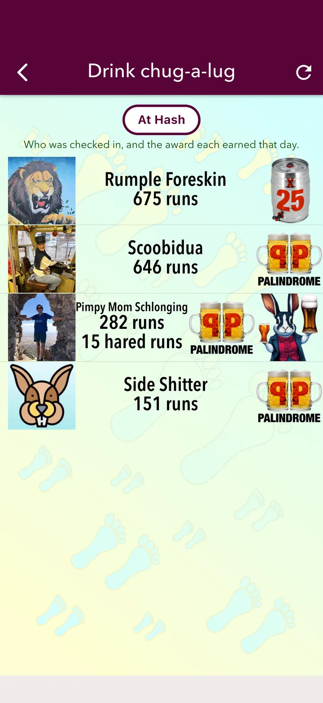<figcaption><b>Award list</b><span>Who was checked in, and what each earned that day.</span></figcaption></figure></div>
    <div class="folio"><span>07 · The circle</span><span>21</span></div>
  </div>
</section>

<!-- ============================== CH 8 ============================== -->
<section class="page" id="ch8" aria-labelledby="ch8-title">
  <div class="wrap">
    <div class="opener">
      <div class="numeral" aria-hidden="true">08</div>
      <div>
        <span class="kicker">Chapter 08 · Money &amp; the ledger</span>
        <h2 class="chapter-title" id="ch8-title">Hash Cash</h2>
        <p class="standfirst">One ledger for run fees, memberships, kit and credit. It works offline and never charges anyone twice.</p>
        <div class="chips"><span class="chip-label">For</span><span class="chip">Hash Cash</span><span class="chip">Hasher</span><span class="chip">Kennel admin</span><span class="chip-label">In</span><span class="chip where">App</span></div>
      </div>
    </div>
    <div class="columns">
      <p>Each run can charge members, visitors and virgins different amounts. The Hash Cash takes payment at check-in in cash, from a credit balance or by card, and can charge a visiting group in one transaction. A free run records attendance without pretending money changed hands.</p>
      <p>Hashers can pay their own fee from their phone and renew their membership in the app, so nobody has to catch the Hash Cash between the circle and the bar.</p>
      <div class="howto">
        <h4>What the ledger handles</h4>
        <ul>
          <li><b>Run fees</b> by member, visitor and virgin price.</li>
          <li><b>Memberships</b> on annual, rolling or calendar-year renewal.</li>
          <li><b>Haberdashery</b>: shirts, badges and kit, reported separately.</li>
          <li><b>Credit</b>: pay for ten runs up front, if your kennel uses it.</li>
          <li><b>Expenses</b> with a photo of the receipt.</li>
        </ul>
      </div>
      <p>Money is held as exact decimals, so rounding never loses a cent. A payment taken without signal waits in an outbox and is sent when you reconnect, and a retried payment is recognised as the same payment.</p>
      <p class="tip">Member standing is worked out from payment history every night. A lapsed membership shows as lapsed without anyone touching it.</p>
      <p>Reports by run and by period make reconciling the bucket simple, and can be emailed to the Hash Cash on a schedule.</p>
    </div>
    <div class="shots"><figure class="shot">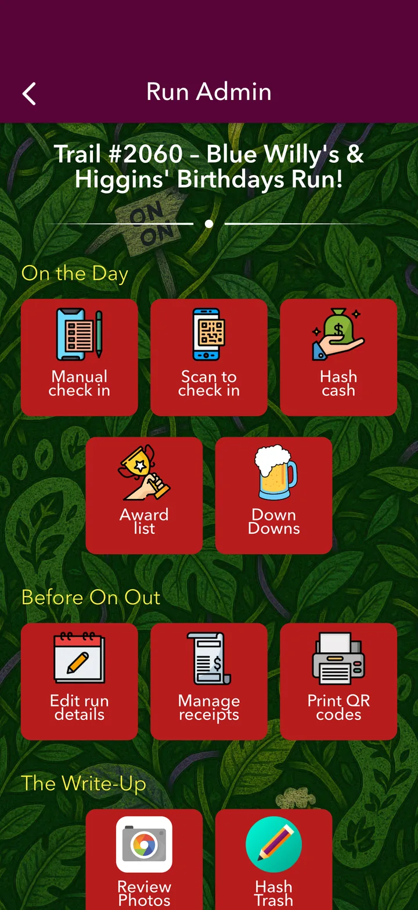<figcaption><b>Run Admin</b><span>On the day: check-in, Hash cash, awards and down-downs. Before On Out: the run, receipts and QR codes.</span></figcaption></figure><figure class="shot">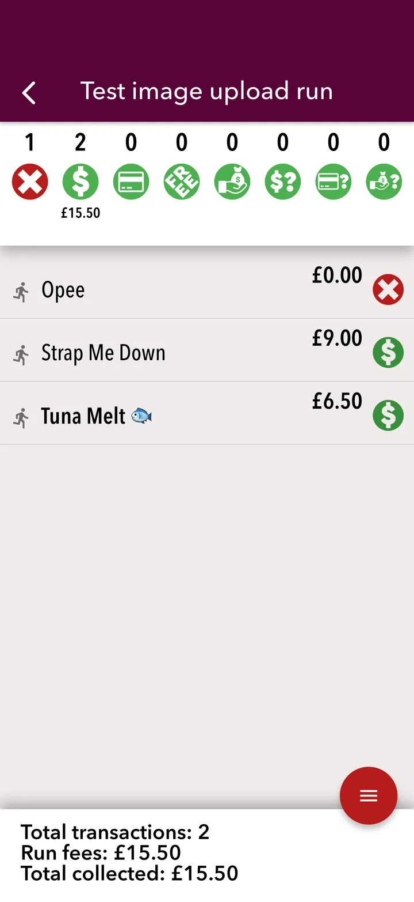<figcaption><b>Hash cash</b><span>Who paid what, by method, with the run's total collected.</span></figcaption></figure></div>
    <div class="folio"><span>08 · Hash Cash</span><span>23</span></div>
  </div>
</section>

<!-- ============================== CH 9 ============================== -->
<section class="page" id="ch9" aria-labelledby="ch9-title">
  <div class="wrap">
    <div class="opener">
      <div class="numeral" aria-hidden="true">09</div>
      <div>
        <span class="kicker">Chapter 09 · Messaging, notifications &amp; email</span>
        <h2 class="chapter-title" id="ch9-title">Chat, alerts &amp; email</h2>
        <p class="standfirst">A chat for every run and every kennel. And one button that tells the whole club about the next trail.</p>
        <div class="chips"><span class="chip-label">For</span><span class="chip">Hasher</span><span class="chip">Hare Raiser</span><span class="chip">Kennel admin</span><span class="chip-label">In</span><span class="chip where">App</span><span class="chip where">Portal</span><span class="chip where">Web</span></div>
      </div>
    </div>
    <div class="columns">
      <p>Every run has its own chat, so &ldquo;where are you?&rdquo; has an obvious place to go. Every kennel has one too, and there are rooms for office holders: Grand Masters, Hash Cash, Religious Advisors and kennel admins can talk to their counterparts in other clubs. Send photos and locations, reply to a message, react with a beer, or message a hasher directly.</p>
      <p>Chats open at the newest message. The unread badge clears the moment you read, on every device you own.</p>
      <h3>Notifications</h3>
      <p>Choose which runs and kennels may notify you. You will hear when someone messages a run you are going to, when the RA picks a song, and before a run you said you would attend.</p>
      <div class="howto">
        <h4>Save and send a run</h4>
        <ol>
          <li>Edit the run and tap <b>Save and send</b>.</li>
          <li>Tick <b>Post to WhatsApp</b> for a ready-written notice with RSVP links.</li>
          <li>Tick <b>Email hashers</b>. Choose <b>Use run description</b>, or <b>Write with AI</b> and add a prompt such as &ldquo;make it a Halloween story&rdquo;.</li>
          <li>Use <b>Preview to me</b> and <b>Who gets it</b> before you send.</li>
        </ol>
      </div>
      <p>The email goes to members, followers and anyone who has RSVP&rsquo;d to the run, unless they have turned run emails off. Every email carries the run's facts, one-tap I&rsquo;m in and Can&rsquo;t make it buttons, and an unsubscribe link that works first time.</p>
      <p class="tip">No app? The links in the WhatsApp notice and the email work in a browser. Sign in with a six-letter code sent to your email, or a passkey on a device you have used before.</p>
    </div>
    <div class="shots"><figure class="shot">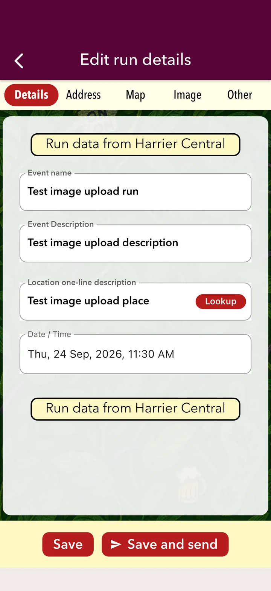<figcaption><b>Save and send</b><span>Edit the run, then Save and send to post and email it in one go.</span></figcaption></figure><figure class="shot">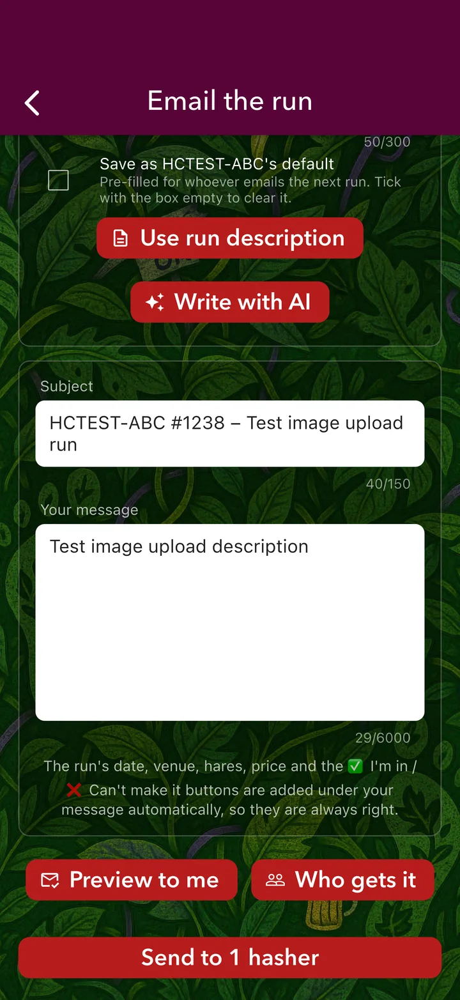<figcaption><b>Email the run</b><span>Use run description or Write with AI, then Preview to me before you send.</span></figcaption></figure><figure class="shot">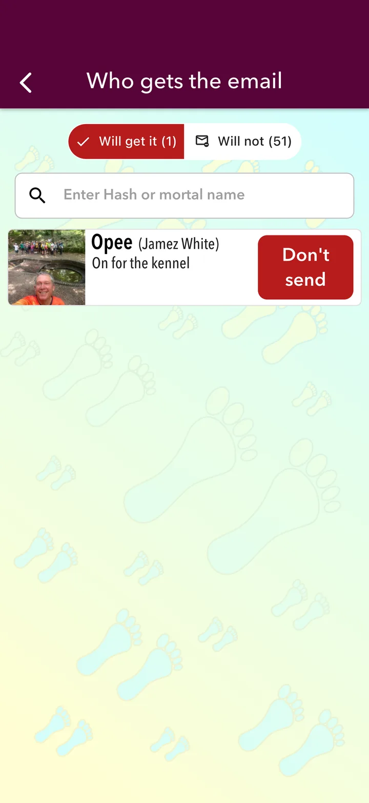<figcaption><b>Who gets the email</b><span>Everyone it will reach, and anyone it will not, with the reason.</span></figcaption></figure></div>
    <div class="folio"><span>09 · Chat, alerts &amp; email</span><span>25</span></div>
  </div>
</section>

<!-- ============================== CH 10 ============================== -->
<section class="page" id="ch10" aria-labelledby="ch10-title">
  <div class="wrap">
    <div class="opener">
      <div class="numeral" aria-hidden="true">10</div>
      <div>
        <span class="kicker">Chapter 10 · Stats &amp; reporting</span>
        <h2 class="chapter-title" id="ch10-title">Stats &amp; leaderboards</h2>
        <p class="standfirst">Your run count is the closest thing hashing has to a rank. Here is how it is kept.</p>
        <div class="chips"><span class="chip-label">For</span><span class="chip">Hasher</span><span class="chip">Grand Master</span><span class="chip-label">In</span><span class="chip where">App</span><span class="chip where">Web</span></div>
      </div>
    </div>
    <div class="columns">
      <p>Your profile shows your runs for each kennel and your total across all of them, plus a rolling count for the last twelve months. Runs from before your kennel joined Harrier Central can be added as a historical figure, and a count built partly from that history is marked as an estimate.</p>
      <p>Your run history is a map and a list: every run you have done, the trails you recorded, and the kennels you have run with.</p>
      <div class="howto">
        <h4>Leaderboards</h4>
        <ul>
          <li><b>Kennel</b>: the people you actually run with.</li>
          <li><b>Global</b>: how the wider hash is doing.</li>
          <li><b>By period</b>: so a newcomer is not forever behind a thirty-year veteran.</li>
        </ul>
      </div>
      <p>Grand Masters see attendance trends to tell whether the club is growing, and can have a summary emailed after each run. Visitors can read a kennel's public stats page to judge how active it is before they turn up.</p>
    </div>
    <div class="shots"><figure class="shot">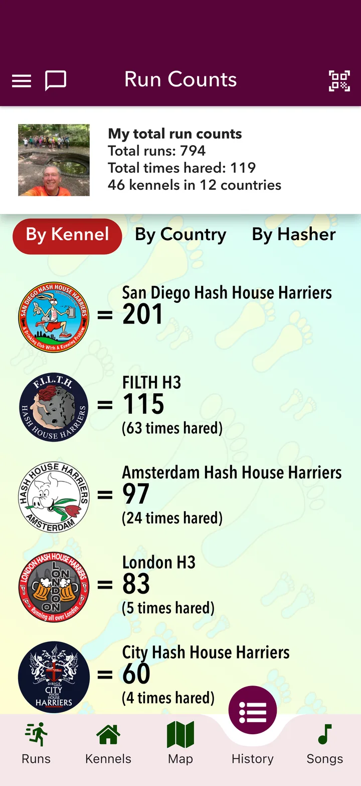<figcaption><b>Run Counts</b><span>Your totals across every kennel and country, then each kennel in turn.</span></figcaption></figure><figure class="shot">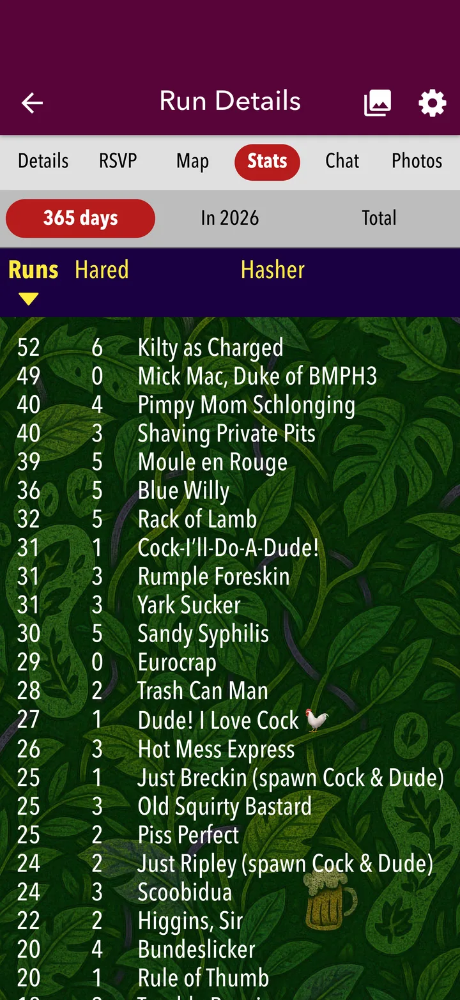<figcaption><b>Run stats</b><span>The kennel's leaderboard for this run: runs and times hared, over 365 days, the year or all time.</span></figcaption></figure></div>
    <div class="folio"><span>10 · Stats &amp; leaderboards</span><span>27</span></div>
  </div>
</section>

<!-- ============================== CH 11 ============================== -->
<section class="page" id="ch11" aria-labelledby="ch11-title">
  <div class="wrap">
    <div class="opener">
      <div class="numeral" aria-hidden="true">11</div>
      <div>
        <span class="kicker">Chapter 11 · Public web presence</span>
        <h2 class="chapter-title" id="ch11-title">Your kennel on the web</h2>
        <p class="standfirst">Every kennel gets a website at hashruns.org, kept up to date by the runs you already enter.</p>
        <div class="chips"><span class="chip-label">For</span><span class="chip">Visitor</span><span class="chip">Kennel admin</span><span class="chip-label">In</span><span class="chip where">Web</span><span class="chip where">Portal</span></div>
      </div>
    </div>
    <div class="columns">
      <p>Your kennel's site lives at <b>hashruns.org/your-kennel</b>. It has a landing page with the next run, upcoming and past runs, an about page that explains hashing to newcomers, the songbook and your stats. A kennel with its own domain can point it at the site and keep its established address.</p>
      <p>Each run has its own page at <b>hashruns.org/your-kennel/run-number</b>, with its map, its PackTrack replay and its photo gallery, ready to share in a group chat with the run's image as the preview.</p>
      <div class="howto">
        <h4>Make the site look like your club</h4>
        <ol>
          <li>Open the web editor from the admin portal.</li>
          <li>Rearrange the blocks on any page. Changes show on the next load.</li>
          <li>Set your colours, logo and light or dark mode. Text stays readable whatever colours you pick.</li>
        </ol>
      </div>
      <p>The root of hashruns.org is a calendar of runs from every kennel, and each kennel's pages are written for search engines, so somebody searching for a hash in their town can find you.</p>
      <p class="tip">Old links from the previous hashruns.org still work. They land on the matching new page.</p>
    </div>
    <figure class="wide">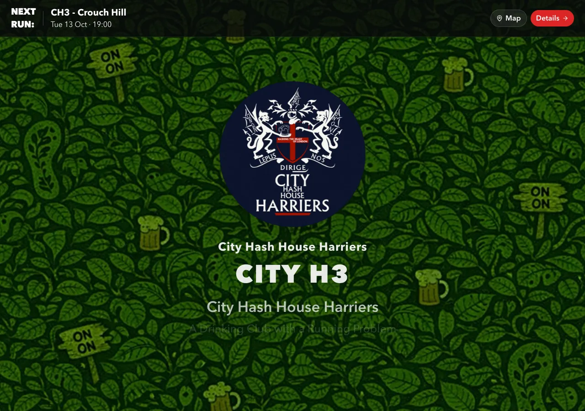<figcaption><b>hashruns.org/cityh3</b><span>A kennel's home page: the next run pinned to the top, its logo on its own artwork.</span></figcaption></figure><figure class="wide">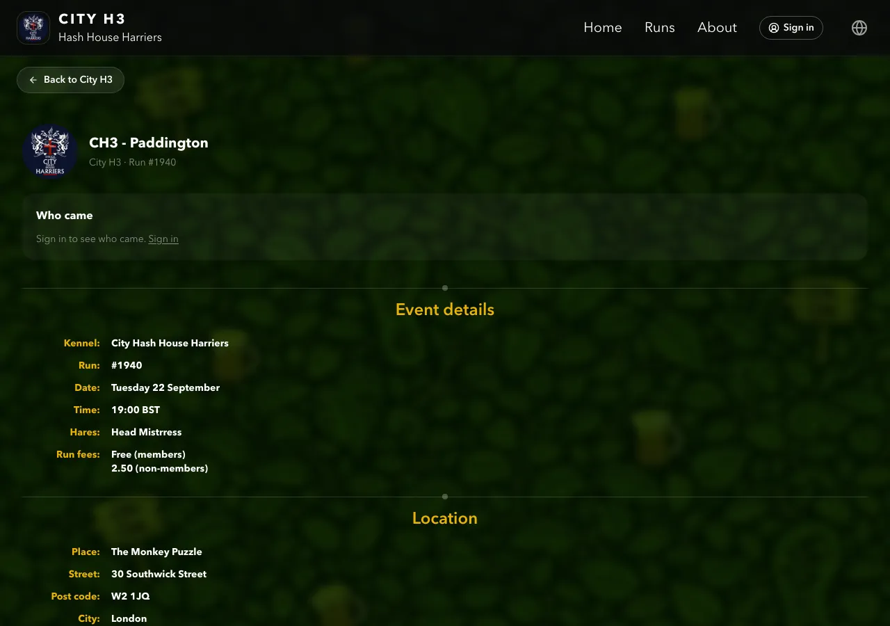<figcaption><b>A run's page</b><span>Every run has its own address with the event details, location, map and who came.</span></figcaption></figure>
    <div class="folio"><span>11 · Your kennel on the web</span><span>29</span></div>
  </div>
</section>

<!-- ============================== CH 12 ============================== -->
<section class="page" id="ch12" aria-labelledby="ch12-title">
  <div class="wrap">
    <div class="opener">
      <div class="numeral" aria-hidden="true">12</div>
      <div>
        <span class="kicker">Chapter 12 · Administration</span>
        <h2 class="chapter-title" id="ch12-title">The admin portal</h2>
        <p class="standfirst">Everything an admin can do on a phone, on a big screen, at portal.harriercentral.com.</p>
        <div class="chips"><span class="chip-label">For</span><span class="chip">Kennel admin</span><span class="chip">Mismanagement</span><span class="chip">Platform admin</span><span class="chip-label">In</span><span class="chip where">Portal</span></div>
      </div>
    </div>
    <div class="columns">
      <p>The portal is the desk version of the app's admin screens. Editing a run there works exactly as it does on the phone, including Save and send, the email preview and the list of who gets it. Any capability added to one is added to the other.</p>
      <p>Sign in by confirming from the app on your phone. There is no separate portal password.</p>
      <div class="howto">
        <h4>What you can do in the portal</h4>
        <ul>
          <li>Edit your kennel: details, prices, logo, songs and integrations.</li>
          <li>Create, edit and email runs.</li>
          <li>Manage the roster, offices and permissions.</li>
          <li>Approve photos as Hash Flash.</li>
          <li>Open the web editor for hashruns.org.</li>
        </ul>
      </div>
      <h3>Starting a new kennel</h3>
      <p>A club that is not on Harrier Central yet can request a kennel at harriercentral.com. The request lands in the platform team's queue; once approved, the founder receives an emailed code and becomes the first admin.</p>
      <p>Platform admins also see usage across the whole platform, can merge duplicate accounts so every run moves to one, and can publish newsflashes to targeted groups of hashers.</p>
    </div>
    <div class="shots"><figure class="shot">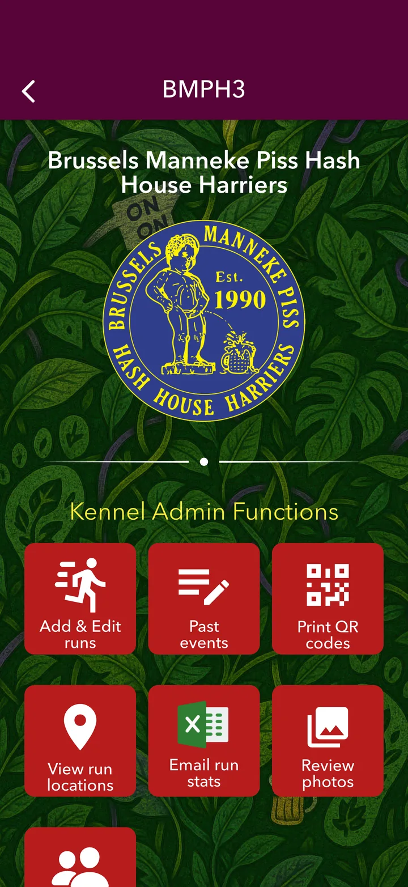<figcaption><b>Kennel admin</b><span>The same admin functions in the app: runs, past events, QR codes, locations, stats email, photos and members.</span></figcaption></figure></div>
    <div class="folio"><span>12 · The admin portal</span><span>31</span></div>
  </div>
</section>

<!-- ============================== BACK PAGE ============================== -->
<footer class="page" id="back" aria-labelledby="back-title">
  <div class="wrap">
    <span class="kicker">Back page</span>
    <h2 class="section-title" id="back-title">Quick reference</h2>
    <div class="back">
      <div>
        <h3>Get the app</h3>
        <p>Search for Harrier Central on the App Store or Google Play. The same account works on both.</p>
      </div>
      <div>
        <h3>Where things live</h3>
        <ul>
          <li><b>App</b> · iOS and Android</li>
          <li><b>Portal</b> · portal.harriercentral.com</li>
          <li><b>Kennel sites</b> · hashruns.org</li>
          <li><b>New kennels</b> · harriercentral.com</li>
        </ul>
      </div>
      <div>
        <h3>Stuck?</h3>
        <p>The app has an FAQ and video tutorials under Help. Contacting support from the app includes your device's details, so you do not have to describe your setup.</p>
      </div>
      <div>
        <h3>Locked out?</h3>
        <p>Choose Find my account and your invite code is emailed to you. If your email address has changed, ask your kennel admin to update it.</p>
      </div>
    </div>
    <p class="colophon">This guide describes Harrier Central app 3.1.9, portal 2.0.87 and hashruns.org as of October 2026. Some features depend on your kennel switching them on, and some marks and customs vary from kennel to kennel. Screens are from the iPhone app, build 3.1.9+1460, on the Brussels Manneke Piss H3 (BMPH3) kennel and the HCTEST-ABC test kennel (the invite-code screen is from Android), and from hashruns.org. On-On.</p>
    <div class="folio"><span>On-On · Autumn 2026</span><span>33</span></div>
  </div>
</footer>
